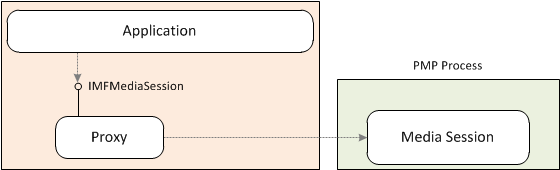
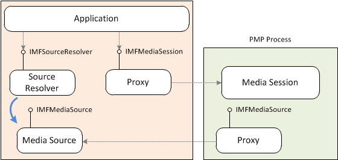
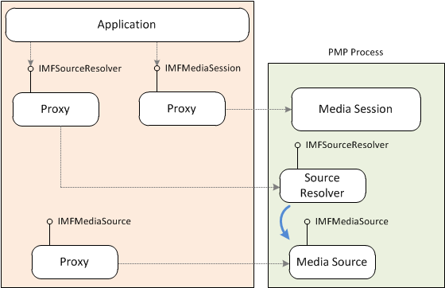

An application can create the Media Session in a separate process called the Protected Media Path (PMP) process. The main purpose of the PMP process is to enable playback of protected content using digital rights management (DRM). By default, the PMP process is created inside a Protected Environment (PE). Only trusted, signed components can be loaded inside a PE. A secondary benefit of the PMP process is that it isolates the application process from the media pipeline. For more information about the PMP process, see Protected Media Path.
To create the Media Session inside the PMP process, call the MFCreatePMPMediaSession function. Optionally, you can pass in the MFPMPSESSION_UNPROTECTED_PROCESS flag. If this flag is set, the PMP process is created inside an unprotected process, and not a PE process. The unprotected process cannot be used for DRM playback, but does give you the benefits of process isolation.
The MFCreatePMPMediaSession function returns a pointer to a proxy object for the Media Session. The application communicates with the Media Session through the proxy.

By default, when the application creates a topology, the media source is created inside the application process. A proxy to the media source is created inside the PMP process. The media source can create objects inside the PMP process by using the IMFPMPHost interface. For example, to support DRM, a media source creates an object called an input trust authority (ITA). The ITA must be created inside the PMP process. (For more information about ITAs, see Protected Media Path.) To use the IMFPMPHost interface, do the following:
The following illustration shows the media source created in the application process.

Another alternative is to create the media source inside the PMP session.
Set the MF_SESSION_REMOTE_SOURCE_MODE attribute when you create the Media Session. Configuration attributes are specified in the pConfiguration parameter of the MFCreatePMPMediaSession function.
Call MFGetService on the Media Session to get a pointer to the IMFPMPHost interface. The service identifier is MF_PMP_SERVICE.
Call IMFPMPHost::CreateObjectByCLSID with the class identifier CLSID_MFSourceResolver to create the source resolver inside the PMP process. The method returns a pointer to a proxy for the source resolver.
Call IMFSourceResolver::BeginCreateObjectFromURL or IMFSourceResolver::BeginCreateObjectFromByteStream to create the media source.
[!Note]
In this case, you must use the asynchronous versions of these methods, because the synchronous versions are not remotable.
Â
The following illustration shows the media source created in the PMP process.

How to Play Protected Media Files
Â
Â